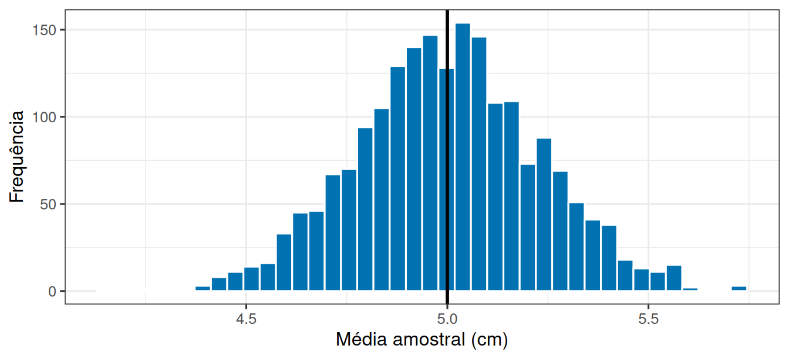
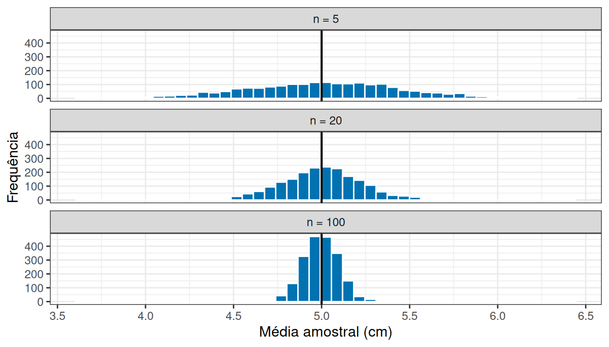
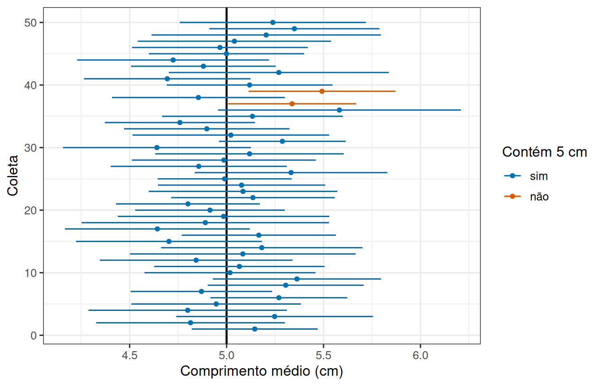

library(tidyverse)
theme_set(theme_bw(base_size = 12))Médias que variam e intervalos que cobrem
Prática em R 03
1 Um costão inventado, para poder conferir a resposta
Com dados reais nunca sabemos o valor verdadeiro que estamos estimando. Aqui vamos fazer o contrário: inventar um costão cujo comprimento médio dos mexilhões é exatamente 5 cm, com desvio-padrão de 1 cm.
Sabendo a resposta de antemão, podemos verificar se os métodos que usamos com dados reais acertam, e com que frequência.
Os parâmetros do costão ficam explícitos no início do script, para serem fáceis de mudar depois:
media_real <- 5 # comprimento médio no costão, em cm
desvio_real <- 1 # desvio-padrão entre mexilhões, em cm
n <- 20 # mexilhões por amostra2 Uma equipe vai ao costão
Coletar 20 mexilhões e medi-los é uma linha de código:
amostra <- rnorm(n, mean = media_real, sd = desvio_real)
round(amostra, 2) [1] 2.86 4.01 4.38 4.38 3.49 3.72 4.92 2.84 5.57 4.14 5.69 4.54 5.85 6.51 4.91
[16] 5.50 4.81 5.73 6.26 5.55media_amostra <- mean(amostra)
media_amostra[1] 4.783406sd(amostra)[1] 1.061442Nesta coleta, a média observada foi 4,78 cm, não exatamente 5. E não deveria ser: são 20 mexilhões sorteados, não o costão inteiro.
3 Uma equipe é pouco. Vamos mandar duas mil
Repetir a coleta mil vezes na mão seria inviável. replicate() faz isso:
medias <- replicate(2000, mean(rnorm(n, mean = media_real, sd = desvio_real)))
length(medias)[1] 2000head(medias, 5)[1] 4.583934 4.693095 4.872793 4.883494 5.182620O objeto medias guarda duas mil médias, cada uma vinda de uma coleta independente de 20 mexilhões.
ggplot(tibble(media = medias), aes(x = media)) +
geom_histogram(bins = 40, fill = "#0072B2", colour = "white") +
geom_vline(xintercept = media_real, linewidth = 1) +
labs(x = "Média amostral (cm)", y = "Frequência")
mean(medias)[1] 5.000828sd(medias)[1] 0.2283644 O que muda quando a amostra cresce?
comparacao <- bind_rows(
tibble(tamanho = "n = 5", media = replicate(2000, mean(rnorm(5, media_real, desvio_real)))),
tibble(tamanho = "n = 20", media = replicate(2000, mean(rnorm(20, media_real, desvio_real)))),
tibble(tamanho = "n = 100", media = replicate(2000, mean(rnorm(100, media_real, desvio_real))))
) |>
mutate(tamanho = fct_relevel(tamanho, "n = 5", "n = 20", "n = 100"))
ggplot(comparacao, aes(x = media)) +
geom_histogram(bins = 45, fill = "#0072B2", colour = "white") +
geom_vline(xintercept = media_real, linewidth = 0.8) +
facet_wrap(~ tamanho, ncol = 1) +
labs(x = "Média amostral (cm)", y = "Frequência")
comparacao |>
group_by(tamanho) |>
summarise(
centro = mean(media),
espalhamento = sd(media)
)# A tibble: 3 × 3
tamanho centro espalhamento
<fct> <dbl> <dbl>
1 n = 5 5.01 0.443
2 n = 20 5.00 0.225
3 n = 100 5.00 0.09995 O erro padrão a partir de uma única amostra
O problema é que, na vida real, você não roda 2000 coletas. Tem uma só.
A saída é estimar o espalhamento das médias a partir da própria amostra, com a fórmula do erro padrão. Reaproveitamos a mesma amostra criada no começo, sem sortear outra:
erro_padrao <- sd(amostra) / sqrt(n)
erro_padrao[1] 0.2373456Compare esse valor com o sd(medias) calculado lá atrás, que veio de duas mil coletas. Uma amostra só conseguiu estimar razoavelmente bem a variação de um procedimento que nunca foi repetido.
6 De um número para um intervalo
Com a média e o erro padrão, construímos um intervalo de confiança de 95%. A função qt() fornece o multiplicador da distribuição t, que depende dos graus de liberdade (\(n - 1\)):
multiplicador <- qt(0.975, df = n - 1)
multiplicador[1] 2.093024inferior <- media_amostra - multiplicador * erro_padrao
superior <- media_amostra + multiplicador * erro_padrao
c(inferior, superior)[1] 4.286636 5.2801767 O intervalo acerta com que frequência?
Vamos construir 200 amostras, calcular um intervalo para cada uma e contar quantos contêm o valor real.
coletas <- tibble(
id = rep(1:200, each = n),
comprimento = rnorm(200 * n, mean = media_real, sd = desvio_real)
)
intervalos <- coletas |>
group_by(id) |>
summarise(
media = mean(comprimento),
erro = qt(0.975, df = n - 1) * sd(comprimento) / sqrt(n)
) |>
mutate(
inferior = media - erro,
superior = media + erro,
cobre = factor(
if_else(inferior <= media_real & superior >= media_real, "sim", "não"),
levels = c("sim", "não")
)
)
intervalos |> count(cobre)# A tibble: 2 × 2
cobre n
<fct> <int>
1 sim 193
2 não 7Nesta execução, 96,5% dos 200 intervalos contêm o valor real. Os demais, não. O valor oscila em torno de 95% a cada nova execução, e é essa a taxa de acerto que o “95%” do nome promete.
ggplot(head(intervalos, 50), aes(y = id, x = media, colour = cobre)) +
geom_vline(xintercept = media_real, linewidth = 0.8) +
geom_errorbarh(aes(xmin = inferior, xmax = superior), height = 0) +
geom_point(size = 1.3) +
scale_colour_manual(values = c(sim = "#0072B2", `não` = "#D55E00"), drop = FALSE) +
labs(x = "Comprimento médio (cm)", y = "Coleta", colour = "Contém 5 cm")